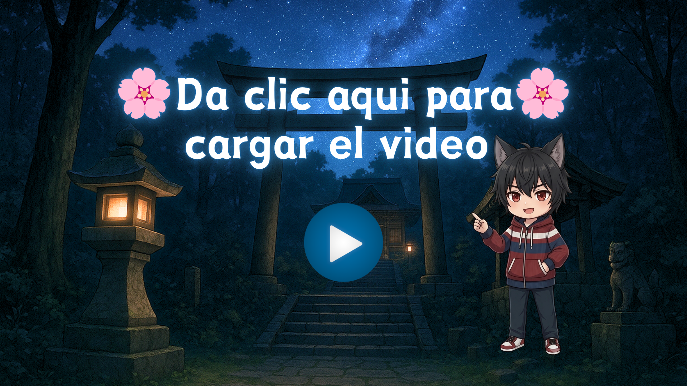

ToriiTV

🎬 Estudio y Editor de Subtítulos 0 líneas
Crea desde cero, modifica textos, afina tiempos y sincroniza desfases con precisión milimétrica.
| # | Inicio (In) | Fin (Out) | Duración | Texto Japonés (Subtítulo) | Traducción Español (Opcional para Anki) | Acciones |
|---|